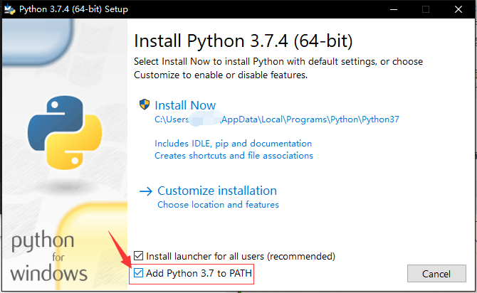
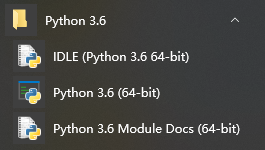

Python 速成
关于 Python¶
Python 是一种目前已在世界上广泛使用的解释型面向对象语言，非常适合用来测试算法片段和原型，也可以用来刷一些 OJ。
为什么要学习 Python¶
- Python 是一种 解释型 语言：类似于 PHP 与 Perl，它在开发过程中无需编译，即开即用，跨平台兼容性好。
- Python 是一种 交互式 语言：您可以在命令行的提示符
>>>后直接输入代码，这将使您的代码更易于调试。 - Python 易学易用，且覆盖面广：从简单的输入输出到科学计算甚至于大型 WEB 应用，Python 可以帮助您在 极低的学习成本 下快速写出适合自己的程序，从而让您的程序生涯如虎添翼，为以后的学习和工作增加一项实用能力。
- Python 易读性强，且在世界广泛使用：这意味着您能够在使用过程中比其他语言 更快获得支持 ， 更快解决问题 。
- 哦，还有一个最重要的：它在各平台下的环境易于配置，并且目前市面上大部分流行的 Linux 发行版（甚至于
NOI Linux）中也大都 内置 了个版本比较旧的 Python，这意味着您能真正在考场上使用它，让它成为您的最佳拍档。
学习 Python 时需要注意的事项¶
- 目前的 Python 分为 Python 2 和 Python 3 两个版本，其中 Python 2 虽然 几近废弃 ，但是仍被一些老旧系统和代码所使用。我们通常不能确定在考场上可以使用的版本，因而会 介绍较新版本的 Python ，但还是建议读者了解一下 Python 2 的相关语法，并比较两者之间的差异。
- 如果您之前使用 C++ 语言，那么很遗憾地告诉您，Python 的语法结构与 C++ 差异还是比较大的，请注意使用的时候不要混淆。
- 由于 Python 是高度动态的解释型语言，因此其程序运行有大量的额外开销。通常而言，实现同样功能时 Python 代码越少速度越快（但不要追求极端）。尤其是 for 循环在 Python 中运行的奇慢无比 。因此在使用 Python 时若想获得高性能，尽量使用
filter,map等内置函数，或者使用 “列表理解” 语法的手段来避免循环。
环境安装¶
Windows¶
访问 https://www.python.org/downloads/ ，下载自己需要的版本并安装。 另外为了方便，请务必勾选 Add Python 3.x to PATH 以确保将 Python 加入环境变量！ 如在如下的 Python 3.7.4 安装界面中，应该如图勾选最下一项复选框。

安装完成后，您可以在开始菜单找到安装好的 Python。

如果您按上图勾选了加入环境变量，您还可以通过 命令提示符 ( Win + R -> cmd ）的方式使用 Python。
正常启动后，它会先显示欢迎信息与版本信息，再显示版权声明，之后就会出现提示符 >>> ，一般情况下如下所示：
1 2 3 4 | $ python3 Python 3.6.4 (v3.6.4:d48eceb, Dec 19 2017, 06:54:40) [MSC v.1900 64 bit (AMD64)] on win32 Type "help", "copyright", "credits" or "license" for more information. >>> |
这就是 Python 的 IDLE 。
何谓 IDLE？
Python 的 IDE，“集成开发与学习环境”的英文缩写。是 Python 标准发行版附带的基本编程器和解释器环境。在其他 Python 发行版（如 Anaconda）中还包含 IPython ， Spyder 等更加先进的 IDE。
macOS/Linux¶
通常情况下，正如上文所说，大部分的 Linux 发行版中已经自带了 Python，如果您只打算学学语法并无特别需求，一般情况下不用再另外安装。通常而言，在 Linux 终端中运行 python 进入的是 Python 2，而运行 python3 进入的是 Python 3。
而由于种种依赖问题（如 CentOS 的 yum )，自行编译安装后通常还要处理种种问题，这已经超出了本文的讨论范畴。
而在这种情况下您一般能直接通过软件包管理器来进行安装，如在 Ubuntu 下安装 Python 3 ：
1 | sudo apt install python3 |
更多详情您可以直接在搜索引擎上使用关键字 系统名称(标志版本) 安装 Python 2/3 来找到对应教程。
运行 python 还是 python3 ？
根据 Python 3 官方文档 的说法，在 Unix 系统中， Python 3.X 解释器 默认安装 （指使用软件包管理器安装）后的执行文件并不叫作 python ，这样才不会与同时安装的 Python 2.X 冲突。同样的，默认安装的 pip 软件也是类似的情况，Python 3 包管理器的文件名为 pip3 您可以根据自己的使用习惯自建软链或者 shell 别名，但还请注意不要与自带的冲突。
关于镜像和 pip¶
目前国内关于 源码 的镜像缓存主要是 北京交通大学 和 华为开源镜像站 在做，如果您有下载问题的话可以到那里尝试一下。
如果您还有使用 pip 安装其他模块的需求，请参照 TUNA 的镜像更换帮助 。
pip 是什么？
Python 的默认包管理器，用来安装第三方 Python 库。它的功能很强大，能够处理版本依赖关系，还能通过 wheel 文件支持二进制安装。pip 的库现在托管在 PyPI （即“Python 包索引”）平台上，用户也可以指定第三方的包托管平台。
关于 PyPI 的镜像，可以使用如下大镜像站的资源：
基本语法¶
Python 以其简洁易懂的语法而出名。它基本的语法结构可以非常容易地在网上找到，例如 菜鸟教程 就有不错的介绍。这里仅介绍一些对 OIer 比较实用的语言特性。
关于注释¶
在此提前声明一下 Python 中注释的写法，因为在后面的讲解中会频繁用到。
1 2 3 4 5 6 | # 用 # 字符开头的是单行注释 """ 跨多行字符串会用三个引号 包裹，但也常被用来做多 行注释.(NOTE: 在字符串中不会考虑缩进问题) """ |
加入注释代码并不会影响程序的正常运行。我们鼓励加入注释来使您的代码更加易懂易用。
基本数据类型与运算¶
有人说，你可以把你系统里装的 Python 当作一个多用计算器，这是事实。
你可以在提示符 >>> 后面输入一个表达式，就像其他大部分语言（如 C++）一样使用运算符 + 、 - 、 * 、 / 来对数字进行运算；还可以使用 () 来进行符合结合律的分组，例如：
1 2 3 4 5 6 7 8 9 10 11 12 13 14 15 16 17 18 19 | >>> 233 # 整数就是整数 233 >>> 5 + 6 # 算术也没有什么出乎意料的 11 >>> 50 - 4 * 8 18 >>> (50 - 4) * 8 368 >>> 15 / 3 # 但是除法除外，它会永远返回浮点 float 类型 5.0 >>> (50 - 4 * 8) / 9 2.0 >>> 5 / 3 1.6666666666666667 >>> 5.0 * 6 # 浮点数的运算结果也是浮点数 30.0 |
整数（比如 5 、 8 、 16 ）有 int 类型，有小数部分的（如 2.33 、 6.0 ）则有 float 类型。随着更深入的学习你可能会接触到更多的类型，但是在速成阶段这些已经足够使用。
在上面的实践中你也看到了，除法运算（ / ）永远返回浮点类型（在 Python 2 中返回整数）。如果你想要整数或向下取整的结果的话，可以使用整数除法（ // )。同样的，你也可以像 C++ 中一样，使用模（ % ）来计算余数。
1 2 3 4 5 6 7 8 9 10 | >>> 5 / 3 # 正常的运算会输出浮点数 1.6666666666666667 >>> 5 // 3 # 使用整数除法则会向下取整，输出整数类型 1 >>> -5 // 3 # 符合向下取整原则 -2 >>> 5.0 // 3.0 # 如果硬要浮点数向下取整也可以这么做 1.0 >>> 5 % 3 # 取模同 C++ ，没有什么好说的 2 |
特别的，Python 封装了乘方（ ** ）的算法，这也表明 Python 附有 大整数支持 。值得一提的是，Python 还通过内置的 pow(a, b, mod) 提供了 快速幂 的高效实现。
1 2 3 4 5 6 7 8 9 10 | >>> 5 ** 2 25 >>> 2 ** 16 65536 >>> 2 ** 512 13407807929942597099574024998205846127479365820592393377723561443721764030073546976801874298166903427690031858186486050853753882811946569946433649006084096 >>> pow(2, 512, 10000) # 即 2**512 % 10000 的快速实现 4096 >>> 2048 ** 2048 # 在IDLE里试试大整数？ |
输入输出¶
Python 中的输入输出主要通过内置函数 raw_input (Python 2)/ input (Python 3) 和 print 完成，这一部分内容可以参考 Python 的官方文档 。 input 函数用来从标准输入流中读取一行， print 则是向标准输出流中输出一行。在 Python 3 中对 print 增加了 end 参数指定结尾符，可以用来避免 print 自动换行。如果需要更灵活的输入输出操作，可以在引入 sys 包之后利用 sys.stdin 和 sys.stdout 操标准作输入输出流。
另外，如果要进行格式化的输出的话可以利用 Python 中字符串的语法。格式化有两种方法，一种是利用 % 操作符，另一种是利用 format 函数。前者语法与 C 兼容，后者语法比较复杂，可以参考 官方文档 。
1 2 3 4 5 6 7 8 9 10 | >>> print(12) 12 >>> print(12, 12) # 该方法在 Python 2 和 Python 3 中的表现不同 12 12 >>> print("%d" % 12) # 与C语法兼容 12 >>> print("%04d %.3f" % (12, 1.2)) 0012 1.200 >>> print("{name} is {:b}".format(5, name="binary of 5")) binary of 5 is 101 |
开数组¶
从 C++ 转过来的同学可能很迷惑怎么在 Python 中开数组，这里就介绍在 Python 开数组的语法。
使用 list¶
主要用到的是 Python 中列表（ list ）的特性，值得注意的是 Python 中列表的实现方式类似于 C++ 的 vector 。
1 2 3 4 5 6 7 8 9 10 11 12 13 14 15 16 17 18 19 20 21 22 23 24 25 26 27 28 29 30 31 32 33 34 | >>> [] # 空列表 [] >>> [1] * 10 # 开一个10个元素的数组 [1, 1, 1, 1, 1, 1, 1, 1, 1, 1] >>> [1, 1] + [2, 3] # 数组拼接 [1, 1, 2, 3] >>> a1 = list(range(8)) # 建立一个自然数数组 >>> a1 [0, 1, 2, 3, 4, 5, 6, 7] >>> [[1] * 3] * 3 # 开一个3*3的数组 [[1, 1, 1], [1, 1, 1], [1, 1, 1]] >>> [[1] * 3 for _ in range(3)] # 同样是开一个3*3的数组 [[1, 1, 1], [1, 1, 1], [1, 1, 1]] >>> a2 = [[1]] * 5; a[0][0] = 2; # 猜猜结果是什么？ >>> a2 [[2], [2], [2], [2], [2]] >>> # 以下是数组操作的方法 >>> len(a1) # 获取数组长度 8 >>> a1.append(8) # 向末尾添加一个数 >>> a1[0] = 0 # 访问和赋值 >>> a1[-1] = 7 # 从末尾开始访问 >>> a1[2:5] # 提取数组的一段 [2, 3, 4] >>> a1[5:2:-1] # 倒序访问 [5, 4, 3] >>> a1.sort() # 数组排序 >>> a2[0][0] = 10 # 访问和赋值二维数组 >>> for i, a3 in enumerate(a2): for j, v in enumerate(a3): temp = v # 这里的v就是a[i][j] |
注意上面案例里提到的多维数组的开法。由于列表的乘法只是拷贝引用，因此 [[1]] * 3 这样的代码生成的三个 [1] 实际上是同一个对象，修改其内容时会导致所有数组都被修改。所以开多维数组时使用 for 循环可以避免这个问题。
使用 Numpy¶
什么是 Numpy
Numpy 是著名的 Python 科学计算库，提供高性能的数值及矩阵运算。在测试算法原型时可以利用 Numpy 避免手写排序、求最值等算法。 Numpy 的核心数据结构是 ndarray ，即 n 维数组，它在内存中连续存储，是定长的。此外 Numpy 核心是用 C 编写的，运算效率很高。
下面的代码将介绍如何利用 Numpy 建立多维数组并进行访问。
1 2 3 4 5 6 7 8 9 10 11 12 13 14 15 16 17 18 19 20 21 22 23 24 25 26 27 28 29 30 31 32 33 34 35 36 37 | >>> import numpy as np # Numpy 是第三方库，需要安装和引用 >>> np.empty(3) # 开容量为3的空数组 array([0.00000000e+000, 0.00000000e+000, 2.01191014e+180]) >>> np.empty((3, 3)) # 开3*3的空数组 array([[6.90159178e-310, 6.90159178e-310, 0.00000000e+000], [0.00000000e+000, 3.99906161e+252, 1.09944918e+155], [6.01334434e-154, 9.87762528e+247, 4.46811730e-091]]) >>> np.zeros((3, 3)) # 开3*3的数组，并初始化为0 array([[0., 0., 0.], [0., 0., 0.], [0., 0., 0.]]) >>> a1 = np.zeros((3, 3), dtype=int) # 开3×3的整数数组 >>> a1[0][0] = 1 # 访问和赋值 >>> a1[0, 0] = 1 # 更友好的语法 >>> a1.shape # 数组的形状 (3, 3) >>> a1[:2, :2] # 取前两行、前两列构成的子阵，无拷贝 array([[1, 0], [0, 0]]) >>> a1[0, 2] # 获取第1和3列，无拷贝 array([[1, 0], [0, 0], [0, 0]]) >>> np.max(a1) # 获取数组最大值 1 >>> a1.flatten() # 将数组展平 array([1, 0, 0, 0, 0, 0, 0, 0, 0]) >>> np.sort(a1, axis=1) # 沿行方向对数组进行排序，返回排序结果 array([[0, 0, 1], [0, 0, 0], [0, 0, 0]]) >>> a1.sort(axis=1) # 沿行方向对数组进行原地排序 |
常用内置库¶
在这里介绍一些写算法可能用得到的内置库，具体用法可以自行搜索或者阅读 官方文档 。
| 包名 | 用途 |
|---|---|
array | 定长数组 |
argparse | 命令行参数处理 |
bisect | 二分查找 |
collections | 提供有序字典、双端队列等数据结构 |
fractions | 有理数 |
heapq | 基于堆的优先级队列 |
io | 文件流、内存流 |
itertools | 迭代器相关 |
math | 常用数学函数 |
os.path | 系统路径相关 |
random | 随机数 |
re | 正则表达式 |
struct | 转换结构体和二进制数据 |
sys | 系统信息 |
对比 C++ 与 Python¶
相信大部分算法竞赛选手已经熟练掌握了 C++98 的语法。接下来我们展示一下 Python 语法的一些应用。
接下来的例子是 Luogu P4779「【模板】单源最短路径（标准版）」 的代码。我们将 C++ 代码与 Python 代码做出对比：
从声明一些常量开始：
C++：
1 2 3 | #include <bits/stdc++.h> using namespace std; const int N = 1e5 + 5, M = 2e5 + 5; |
Python：
1 2 3 4 5 6 7 8 | try: # 引入优先队列模块 import Queue as pq #python version < 3.0 except ImportError: import queue as pq #python3.* N = int(1e5 + 5) M = int(2e5 + 5) INF = 0x3f3f3f3f |
然后是声明前向星结构体和一些其他变量。
C++：
1 2 3 4 5 6 7 8 9 10 | struct qxx { int nex, t, v; }; qxx e[M]; int h[N], cnt; void add_path(int f, int t, int v) { e[++cnt] = (qxx){h[f], t, v}, h[f] = cnt; } typedef pair<int, int> pii; priority_queue<pii, vector<pii>, greater<pii>> q; int dist[N]; |
Python：
1 2 3 4 5 6 7 8 9 10 11 12 13 14 15 16 17 18 19 20 21 22 23 | class qxx: # 前向星类（结构体） def __init__(self): self.nex = 0 self.t = 0 self.v = 0 e = [qxx() for i in range(M)] # 链表 h = [0 for i in range(N)] cnt = 0 dist = [INF for i in range(N)] q = pq.PriorityQueue() # 定义优先队列，默认第一元小根堆 def add_path(f, t, v): # 在前向星中加边 # 如果要修改全局变量，要使用global来声名 global cnt, e, h # 调试时的输出语句，多个变量使用元组 # print("add_path(%d,%d,%d)" % (f,t,v)) cnt += 1 e[cnt].nex = h[f] e[cnt].t = t e[cnt].v = v h[f] = cnt |
然后是求解最短路的 Dijkstra 算法代码：
C++：
1 2 3 4 5 6 7 8 9 10 11 12 13 14 15 | void dijkstra(int s) { memset(dist, 0x3f, sizeof(dist)); dist[s] = 0, q.push(make_pair(0, s)); while (q.size()) { pii u = q.top(); q.pop(); if (dist[u.second] < u.first) continue; for (int i = h[u.second]; i; i = e[i].nex) { const int &v = e[i].t, &w = e[i].v; if (dist[v] <= dist[u.second] + w) continue; dist[v] = dist[u.second] + w; q.push(make_pair(dist[v], v)); } } } |
Python：
1 2 3 4 5 6 7 8 9 10 11 12 13 14 15 16 17 18 19 20 21 | def nextedgeid(u): # 生成器，可以用在for循环里 i = h[u] while i: yield i i = e[i].nex def dijkstra(s): dist[s] = 0 q.put((0, s)) while not q.empty(): u = q.get() # get函数会顺便删除堆中对应的元素 if dist[u[1]] < u[0]: continue for i in nextedgeid(u[1]): v = e[i].t w = e[i].v if dist[v] <= dist[u[1]]+w: continue dist[v] = dist[u[1]]+w q.put((dist[v], v)) |
最后是主函数部分
C++：
1 2 3 4 5 6 7 8 9 10 11 12 | int n, m, s; int main() { scanf("%d%d%d", &n, &m, &s); for (int i = 1; i <= m; i++) { int u, v, w; scanf("%d%d%d", &u, &v, &w); add_path(u, v, w); } dijkstra(s); for (int i = 1; i <= n; i++) printf("%d ", dist[i]); return 0; } |
Python：
1 2 3 4 5 6 7 8 9 10 11 12 13 14 15 16 | # 如果你直接运行这个python代码（不是模块调用什么的）就执行命令 if __name__ == '__main__': # 一行读入多个整数。注意它会把整行都读进来 n, m, s = map(int, input().split()) for i in range(m): u, v, w = map(int, input().split()) add_path(u, v, w) dijkstra(s) for i in range(1, n+1): # 两种输出语法都是可以用的 print("{}".format(dist[i]), end=' ') # print("%d" % dist[i],end=' ') print() # 结尾换行 |
完整的代码如下：
C++
1 2 3 4 5 6 7 8 9 10 11 12 13 14 15 16 17 18 19 20 21 22 23 24 25 26 27 28 29 30 31 32 33 34 35 36 37 38 39 40 41 42 43 | #include <bits/stdc++.h> using namespace std; const int N = 1e5 + 5, M = 2e5 + 5; struct qxx { int nex, t, v; }; qxx e[M]; int h[N], cnt; void add_path(int f, int t, int v) { e[++cnt] = (qxx){h[f], t, v}, h[f] = cnt; } typedef pair<int, int> pii; priority_queue<pii, vector<pii>, greater<pii>> q; int dist[N]; void dijkstra(int s) { memset(dist, 0x3f, sizeof(dist)); dist[s] = 0, q.push(make_pair(0, s)); while (q.size()) { pii u = q.top(); q.pop(); if (dist[u.second] < u.first) continue; for (int i = h[u.second]; i; i = e[i].nex) { const int &v = e[i].t, &w = e[i].v; if (dist[v] <= dist[u.second] + w) continue; dist[v] = dist[u.second] + w; q.push(make_pair(dist[v], v)); } } } int n, m, s; int main() { scanf("%d%d%d", &n, &m, &s); for (int i = 1; i <= m; i++) { int u, v, w; scanf("%d%d%d", &u, &v, &w); add_path(u, v, w); } dijkstra(s); for (int i = 1; i <= n; i++) printf("%d ", dist[i]); return 0; } |
Python
1 2 3 4 5 6 7 8 9 10 11 12 13 14 15 16 17 18 19 20 21 22 23 24 25 26 27 28 29 30 31 32 33 34 35 36 37 38 39 40 41 42 43 44 45 46 47 48 49 50 51 52 53 54 55 56 57 58 59 60 61 62 63 64 65 66 67 68 69 70 | try: # 引入优先队列模块 import Queue as pq # python version < 3.0 except ImportError: import queue as pq # python3.* N = int(1e5+5) M = int(2e5+5) INF = 0x3f3f3f3f class qxx: # 前向星类（结构体） def __init__(self): self.nex = 0 self.t = 0 self.v = 0 e = [qxx() for i in range(M)] # 链表 h = [0 for i in range(N)] cnt = 0 dist = [INF for i in range(N)] q = pq.PriorityQueue() # 定义优先队列，默认第一元小根堆 def add_path(f, t, v): # 在前向星中加边 # 如果要修改全局变量，要使用global来声名 global cnt, e, h # 调试时的输出语句，多个变量使用元组 # print("add_path(%d,%d,%d)" % (f,t,v)) cnt += 1 e[cnt].nex = h[f] e[cnt].t = t e[cnt].v = v h[f] = cnt def nextedgeid(u): # 生成器，可以用在for循环里 i = h[u] while i: yield i i = e[i].nex def dijkstra(s): dist[s] = 0 q.put((0, s)) while not q.empty(): u = q.get() if dist[u[1]] < u[0]: continue for i in nextedgeid(u[1]): v = e[i].t w = e[i].v if dist[v] <= dist[u[1]]+w: continue dist[v] = dist[u[1]]+w q.put((dist[v], v)) # 如果你直接运行这个python代码（不是模块调用什么的）就执行命令 if __name__ == '__main__': # 一行读入多个整数。注意它会把整行都读进来 n, m, s = map(int, input().split()) for i in range(m): u, v, w = map(int, input().split()) add_path(u, v, w) dijkstra(s) for i in range(1, n+1): # 两种输出语法都是可以用的 print("{}".format(dist[i]), end=' ') # print("%d" % dist[i],end=' ') print() # 结尾换行 |
参考文档¶
- Python 官方中文文档， https://docs.python.org/zh-cn/3/tutorial/
- Learn Python3 In Y Minutes, https://learnxinyminutes.com/docs/python3/
build本页面最近更新：，更新历史
edit发现错误？想一起完善？ 在 GitHub 上编辑此页！
people本页面贡献者：OI-wiki
copyright本页面的全部内容在 CC BY-SA 4.0 和 SATA 协议之条款下提供，附加条款亦可能应用